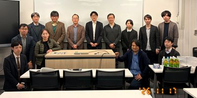

TOP ＞ What's New 過去ログ ＞ 医療排水廃棄物を考えるワークショップ5
☆医療排水廃棄物を考えるワークショップ5☆
2026.11.17（火） カテゴリ：講演
医療排水廃棄物を考えるワークショップ5にお招きいただき、講演しました(^^)
| 会 | 医療排水廃棄物を考えるワークショップ5 |
|---|---|
| 会場 | 東京 |
| 講演日 | 2026年11月17日 |
| 区分 | 招待講演 |
| 題目 | 医療情報を用いたガドリニウム造影剤の使用状況解析と環境中濃度予測への展望 |
| 講演者 | 小林由幸（星薬科大学 薬学部） |
MRI 検査で使うガドリニウム造影剤について、医療情報から使われ方を調べ、環境中の濃度を予測していくための展望をお話ししました。
■ 集合写真

研究の部屋の講演と参加しているプロジェクトもご覧ください。
感想は掲示板へどうぞ♪